Laravel Relationship
Implementasi Relasi Database pada Laravel
Laravel Relationship
A. PENDAHULUAN
Pada Praktikum kali ini kita akan membahas implementasi relationship pada framework Laravel sebagai salah satu konsep fundamental dalam pengembangan aplikasi web berbasis basis data. Pemahaman mengenai relasi antarentitas menjadi aspek penting dalam proses perancangan sistem informasi yang terstruktur, efisien, dan mudah dikembangkan maupun dipelihara di masa mendatang. Pada praktikum ini, kita menggunakan studi kasus berupa sistem akademik sederhana yang melibatkan tiga entitas utama, yaitu mahasiswa,jurusan, dan mata kuliah, yang saling terhubung dalam sebuah basis data relasional.
Dalam proses pemodelan sistem akademik tersebut, kita mengimplementasikan beberapa jenis relasi yang umum digunakan dalam pengembangan aplikasi berbasis database. Relasi antara entitas mahasiswa dan jurusan menerapkan konsep Many-to-One, di mana setiap mahasiswa hanya terdaftar pada satu jurusan, sedangkan satu jurusan dapat memiliki banyak mahasiswa. Konsep tersebut juga dikenal sebagai relasi One-to-Many apabila dilihat dari sisi entitas jurusan terhadap mahasiswa. Implementasi relasi ini bertujuan untuk menjaga konsistensi data serta mempermudah pengelolaan informasi akademik dalam sistem.
Selain itu, kita juga menerapkan relasi Many-to-Many antara entitas mahasiswa dan mata kuliah. Pada relasi ini, seorang mahasiswa dapat mengambil lebih dari satu mata kuliah, dan di sisi lain satu mata kuliah dapat diikuti oleh banyak mahasiswa. Secara teknis, implementasi relasi tersebut dilakukan dengan memanfaatkan tabel pivot sebagai penghubung antarentitas di dalam database. Melalui penerapan relationship pada Laravel, kita dapat membangun struktur data yang lebih sistematis, fleksibel, dan sesuai dengan kebutuhan pengembangan sistem informasi akademik modern.
B. TUJUAN
- Mahasiswa diharapkan mampu memahami secara mendalam mengenai konsep relationship antar entitas di dalam framework Laravel
- Mahasiswa mampu menerapkan relasi One-to-Many dan Many-to-Many secara langsung pada basis data sistem akademik.
- Mahasiswa dapat menampilkan hasil data yang saling berelasi tersebut secara terstruktur pada antarmuka pengguna atau view.
C. ISI
-
Pertama-tama yang harus kita buat adalah migrations untuk tabel major
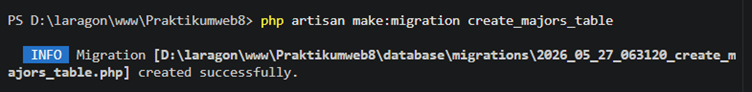
Dengan isi kodingan dibawah ini,yang berfungsi untuk membuat tabel baru dengan nama majors yang ada di dalam database secara otomatis.
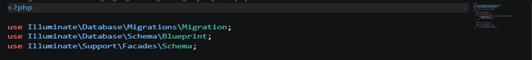
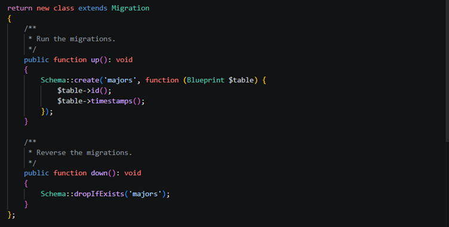
-
Setelah itu,kita perlu membuat tabel baru dengan nama Students
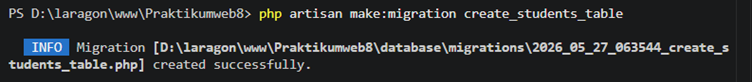
Dengan isi kodingan dibawah ini,yang berfungsi sama seperti sebelumnya adalah untuk membuat tabel baru dengan nama students secara otomatis,
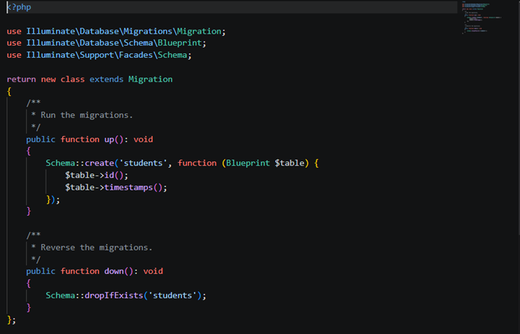
-
Selanjutnya adalah perlu juga kita buat tabel baru dengan nama subjects
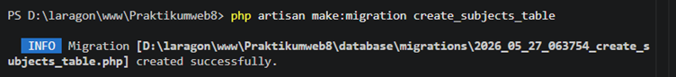
Dengan isi kodingan seperti dibawah ini yang berfungsi untuk membuat tabel baru pada database
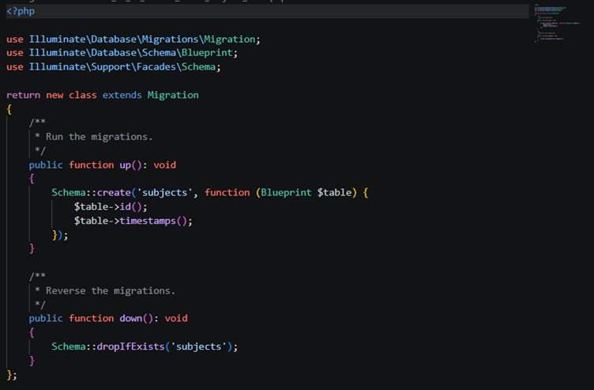
-
Kemudian kita akan membuat kodingan guna untuk table pivot_migration tabel subject
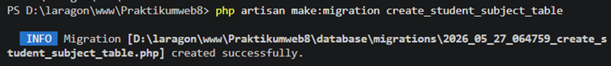
Dengan isi kodingan dibawah ini,yang berfungsi sebagai penghubung antara data mahasiswa dan mata kuliah dengan menggunakan relasi many to many
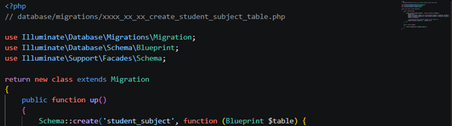
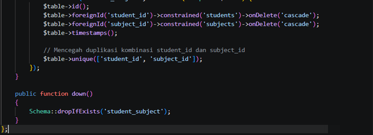
-
Setelah itu kita perlu menampilkan tabel yang sudah kita buat sebelumnya dengan mengetikkan kodingan “PHP artisan Migrate”
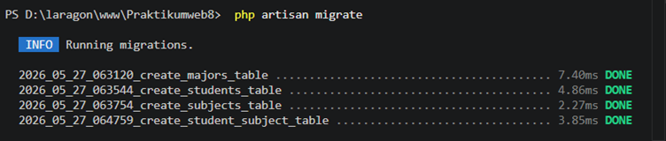
-
Selanjutnya kita perlu membuat model dengan relationship dengan nama model major
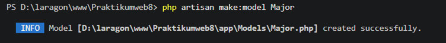
Dengan isi kodingan dibawah ini,yang berfungsi sebagai penghubung antara laravel dengan table majors yang ada pada database
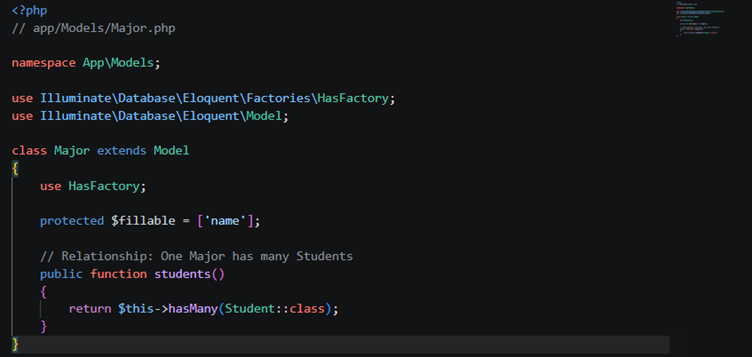
-
Setelah itu,sama seperti sebelumnya,kita perlu membuat model dengan relationship dengan nama “model Student”
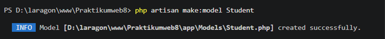
Dengan kodingan seperti dibawah ini:
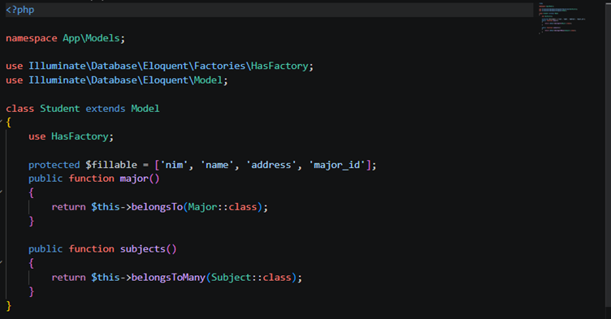
-
Kemudian perlu juga kita buat model relationship dengan nama “model subject”
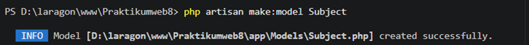
Dengan kodingan seperti di bawah ini:
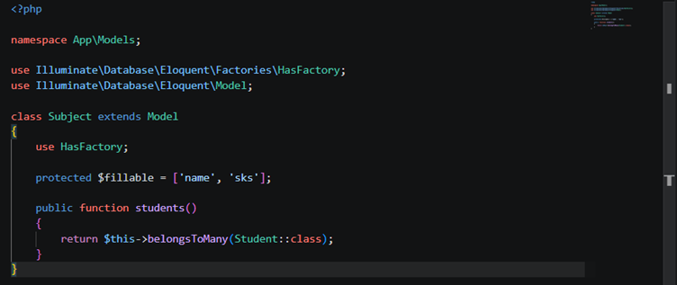
-
Kemudian perlu juga kita buat seeder untuk data sampel dengan nama “seeder major”
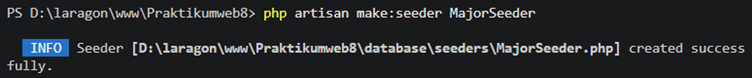
Dengan isi kodingan seperti dibawah ini,yang berfungsi untuk mengisi data awal atau dummy data secara otomatis ke database.
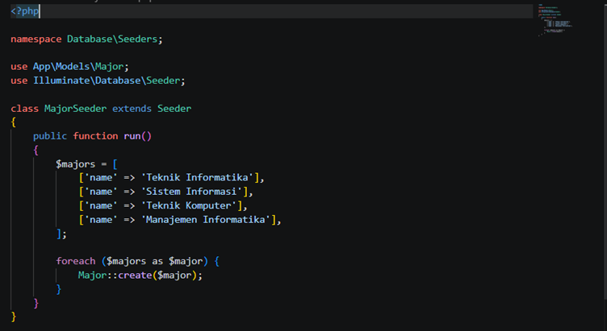
-
Setelah itu,kita juga akan membuat seeder baru dengan nama “seeder student”.
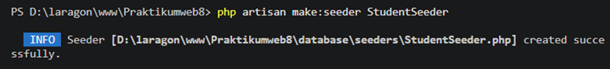
Dengan isi kodingan seperti di bawah ini:
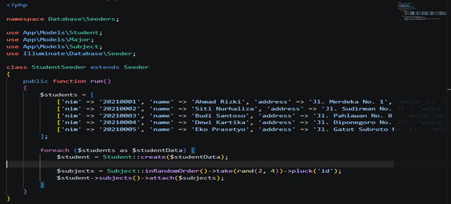
-
Selanjutnya kita masih perlu membuat seeder yang terakhir dengan nama “Seeder Subject”
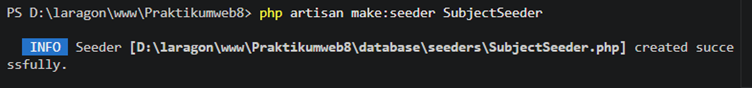
Dengan isi kodingan seperti di bawah ini:
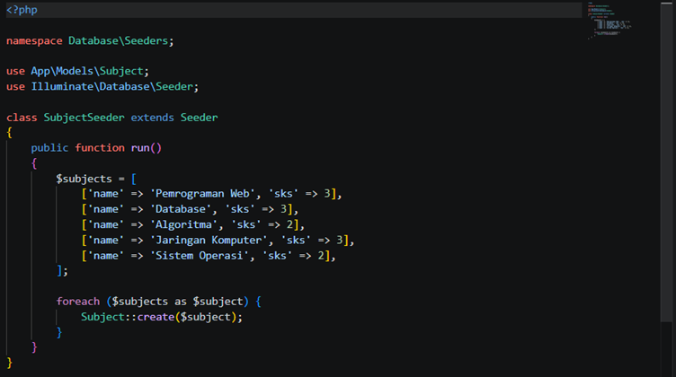
-
Kemudian kita perlu mengubah isi dari “DataBase Seeder” dengan isi nya seperti di bawah ini
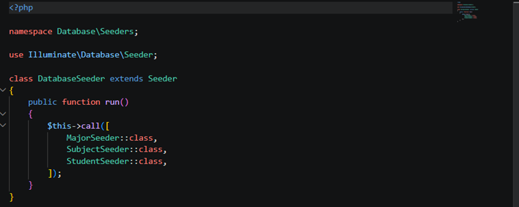
-
Selanjutnya kita perlu untuk menjalankan seeder yang sudah kita buat tadi
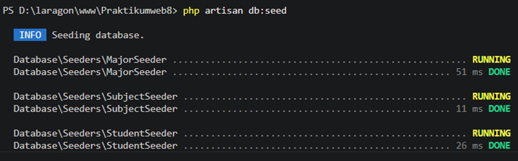
-
Kemudian kita perlu membuat controller dengan nama “Student Controller”
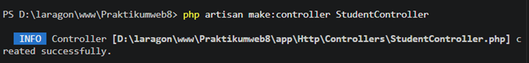
Dengan kodingan seperti dibawah ini,yang berfungsi untuk menampilkan,menambahkan, serta mengubah data yang ada pada database.
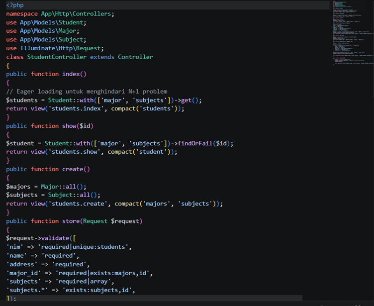
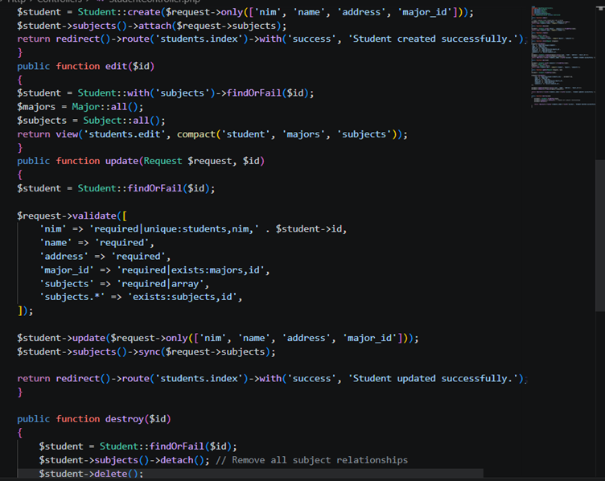
-
Selanjutnya kita perlu membuat routes dengan kodingan seperti dibawah ini:
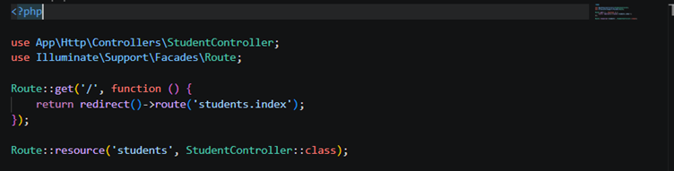
-
Selanjutnya kita perlu membuat views baru dengan langkah seperti dibawah ini
- Membuat Folder baru dengan nama “Layouts” di dalam folder Views.
- Membuat file baru dengan nama “app.blade.php” di dalam folder layouts
- Isi kodingan file “app.blade.php”
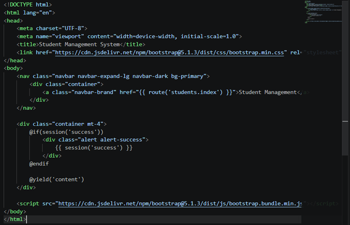
- Membuat Folder baru dengan nama “Students” di dalam folder “Views”
- Membuat file baru dengan nama “index.blade.php” didalam folder students
- Isi kodingan file “Index.blade.php”
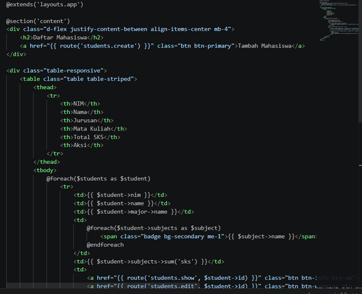
- Membuat file baru dengan nama “create.blade.php” di dalam folder students
- Isi kodingan file “Create.blade.php”
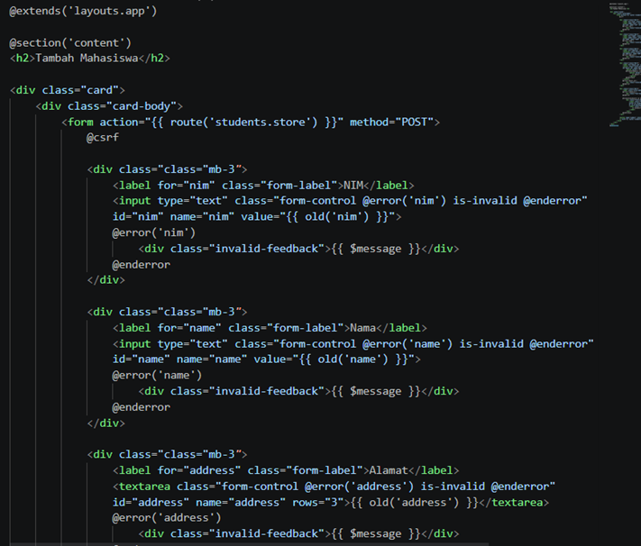
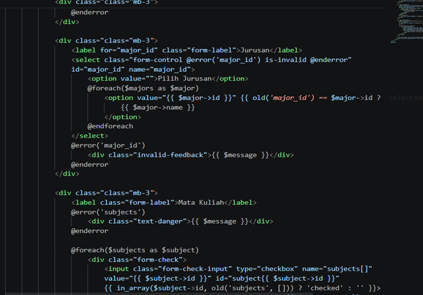
- Membuat file baru dengan nama “detail.blade.php” didalam folder students
- Isi kodingan file “detail.blade.php”
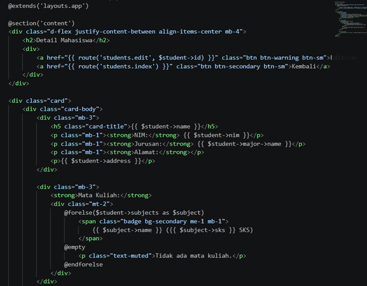
- Membuat file baru dengan nama “edit.blade.php” didalam folder students
- Isi kodingan file “edit.blade.php”
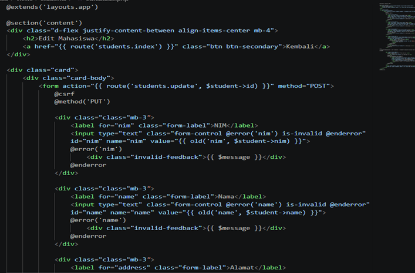
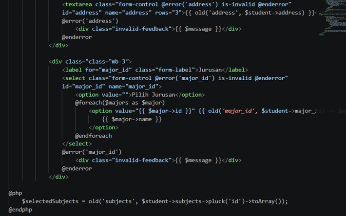
Dengan output akhir:
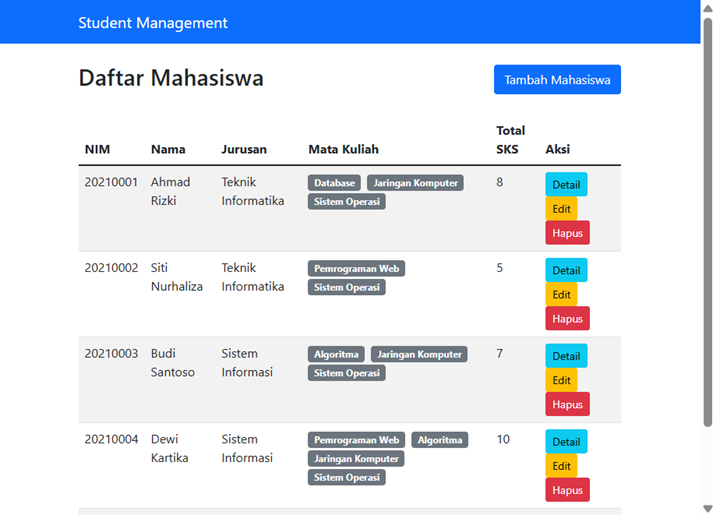
-
Selanjutnya kita akan mengerjakan tugas yang sudah diberikan sebelumnya
- Buka file studentController
- Ubah fungsi index
- Isi kodingan yang telah diperbaharui
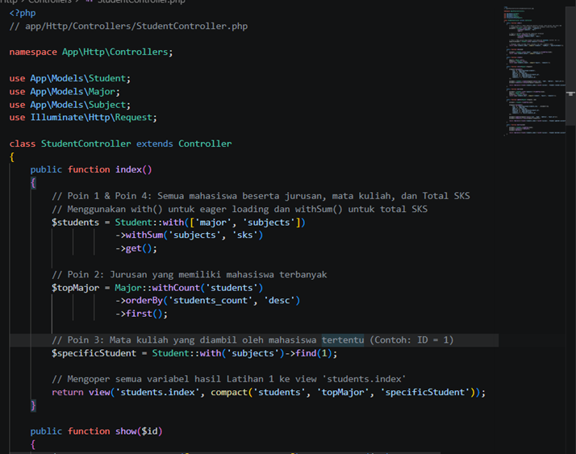
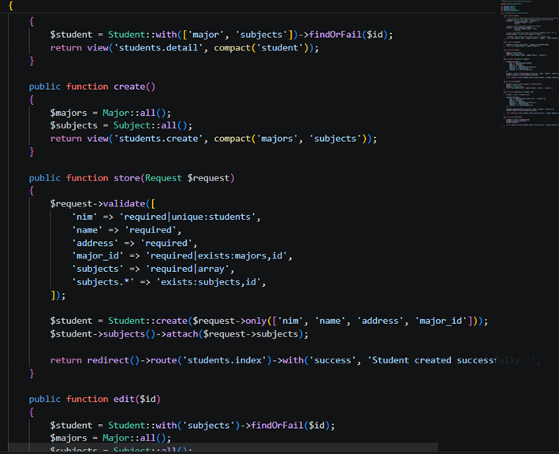
- Buka file index.blade.php dan tambahkan komponen antar muka baru
- Sesuaikan baris kode pada kolom total SKS
- Kodingan Lengkap
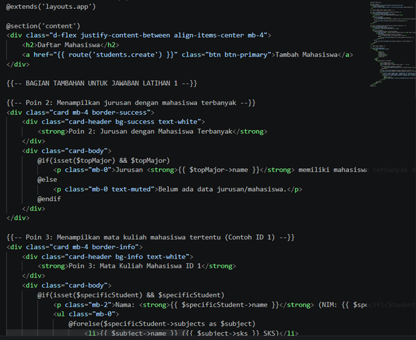
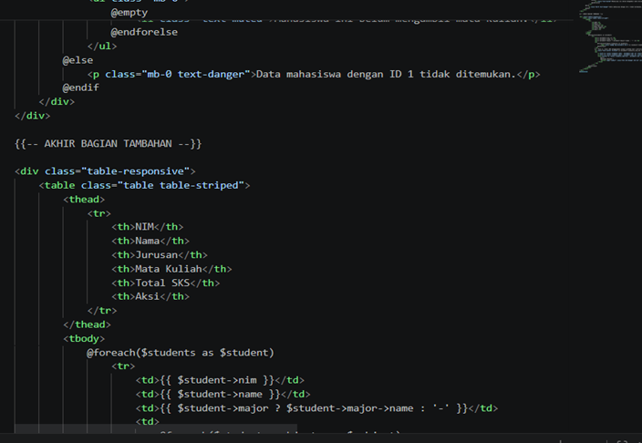
Dengan Output:
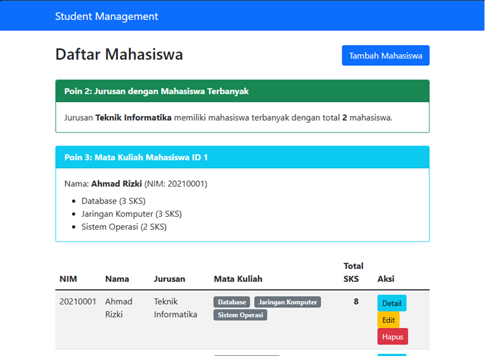
D. KESIMPULAN
Dari praktikum kali ini, dapat kita pahami dan implementasikan konsep relasi One-to-Many serta Many-to-Many pada framework Laravel dengan memahami penggunaan foreign key, pembuatan pivot table, dan penerapan fitur Eloquent Relationship untuk pengelolaan query data secara lebih efisien dibandingkan metode konvensional. Pada Praktikum kali ini juga menekankan penerapan best practice dalam pengembangan aplikasi, khususnya melalui penggunaan metode eager loading untuk mengoptimalkan kinerja sistem dan menghindari inefisiensi saat memuat data relasional. Seluruh proses pengelolaan basis data dan implementasi logika program tersebut kemudian diintegrasikan untuk menampilkan data yang saling berelasi secara baik pada halaman pengguna, sehingga pemahaman terhadap konsep relationship ini menjadi sangat penting dalam mendukung pembangunan aplikasi web yang terstruktur, efisien, fleksibel, dan mudah dipelihara.